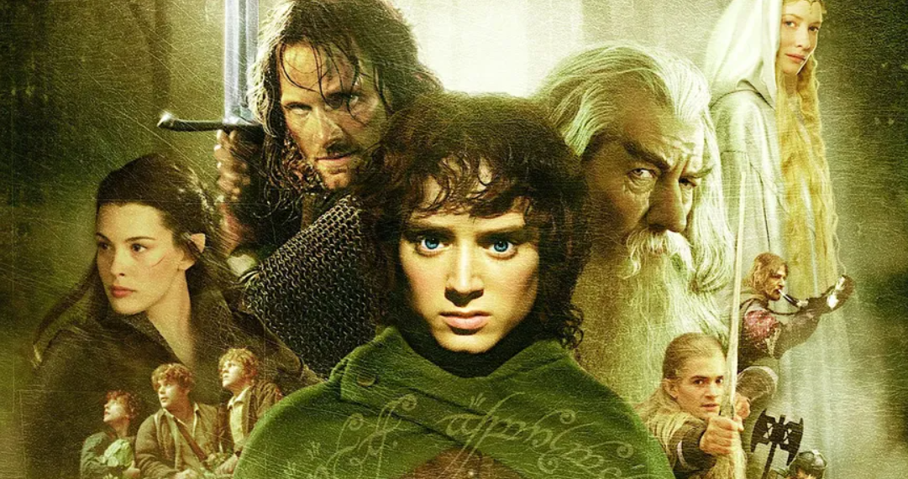

Uma das trilogias mais famosas do cinema
O Senhor dos Anéis é uma trilogia de filmes baseada nos livros de J.R.R. Tolkien. A história acompanha o hobbit Frodo Bolseiro, que recebe a missão de destruir um poderoso anel.
Esse anel pertence ao senhor do mal Sauron e possui grande poder. Frodo e amigos partem em uma jornada perigosa para levá-lo até a montanha onde ele foi criado. Somente lá o anel pode ser destruído.

A trilogia foi filmada praticamente ao mesmo tempo, algo raro na história do cinema.
O último filme da trilogia, O Retorno do Rei, ganhou 11 prêmios Oscar.
Os filmes ajudaram a popularizar ainda mais a literatura de fantasia.
A história acontece em um mundo fictício chamado Terra Média.
O Senhor dos Anéis é considerado uma das maiores produções da história do cinema.